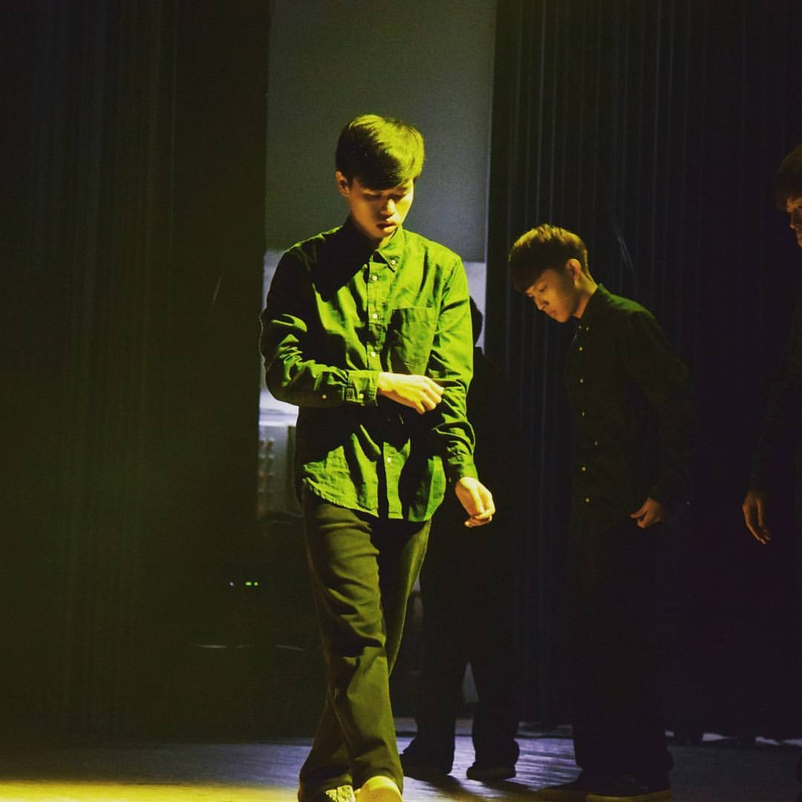
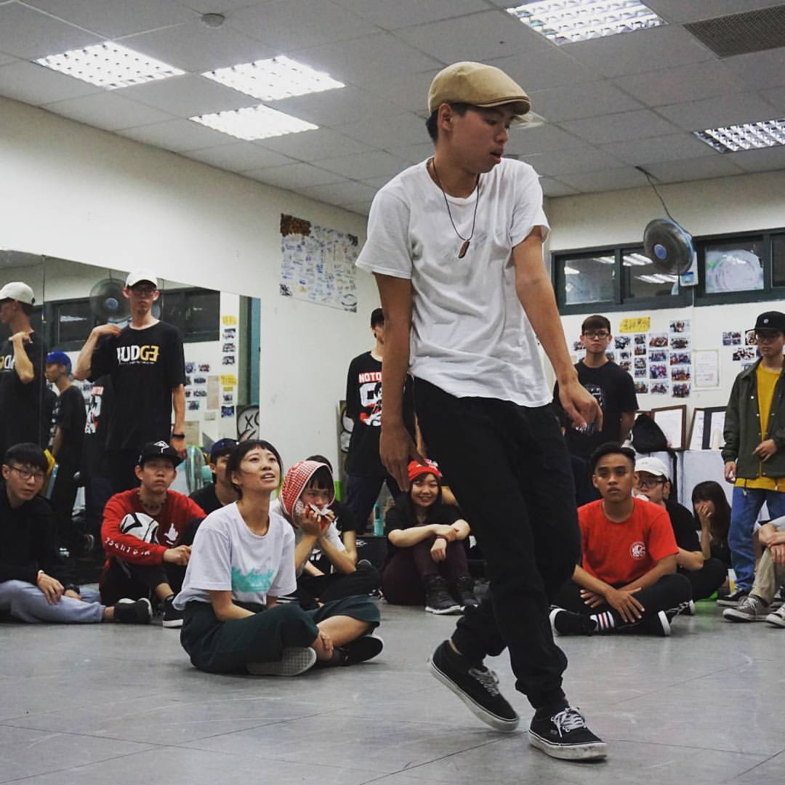

about

Hello!你好，我是陳昇泰，出生於高雄，現居高雄。
我21歲，目前正就讀國立高雄科技大學(原第一科技大學)，興趣是網頁的開發和跳舞，在學期間參與了許多的社團活動，擔任過活動的負責人、主持人、器材等等，期間讓我學習到如何有效率地進行團隊的分工和溝通。
我個性非常喜歡探險、挑戰自我而且有極大的行動力，曾經騎著腳踏車環繞台灣一圈看見了許多不同的景色，也曾經挑戰過高空彈跳、飛行傘，環島一趟後讓我更認識自己，也感到非常的驕傲。
網頁開發是我的興趣也是夢想，每次寫出網頁或完成很酷的特效，都會讓我非常的有成就感和高興，所以當決定要朝這方向邁進後，就開始從學校的資源到線上的教學努力學習，參與過一些線上的課程、也會從Github上觀看其他人的程式碼同時參加一些相關的社群，這些都讓我學習到很多，目前較著重於網頁的前端，而我對自己的期許是在10年內能達成專業的全端開發者。